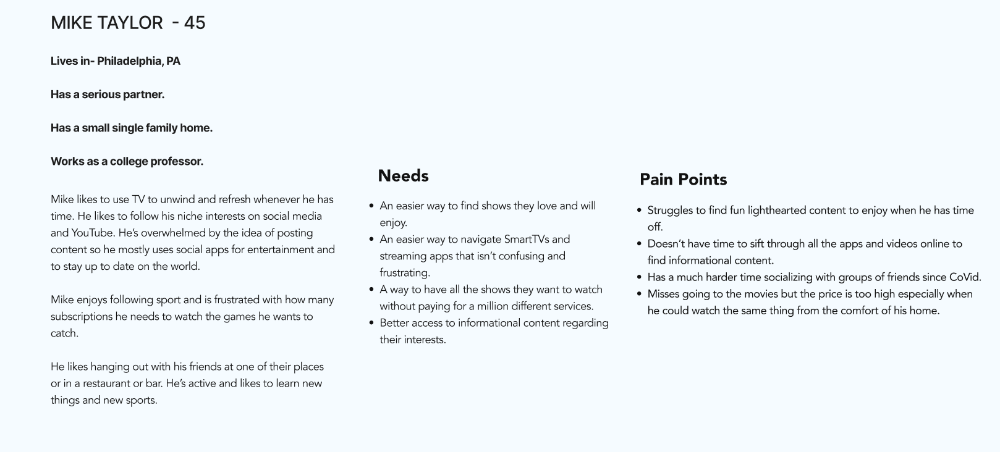

USER RESEARCH
With this open-ended project, my colleagues and I started with the idea of building an app that would connect to the user's smart TV. Having used many different streaming apps and smart TV sets between the four of us, we all felt that there is lots of room for improvement and innovation in a field of software in which most apps have similar, limited functionality, despite being used by millions of people every day. So we embarked on our research to find out how people use their smart TVs now, and what they wanted to be able to do with them.
In our user survey, we found that people mostly used their TVs for streaming apps, and particularly for re-watching favorite shows they'd already seen before. We also conducted several one-on-one interviews to get a deeper sense of someone's habits and frustrations surrounding their smart TV. Some of our findings include:
- People wanted more social media features with their streaming services
- Most people seek out online discourse about a show after they watch it
- Most people watch TV alone and about half with their significant other
- People have issues with how multiple apps are needed to navigate their streaming services

With the insights from our research, we created a proto-persona to help us define who we were building our app for and what it should do. We also conducted a competitor analysis, looking at some of the biggest streaming platforms and adjacent services, including Amazon Watch Party, Letterboxd, and the popular Japanese video community Niconico.

We also organized our findings from the survey and interviews and organized them into an affinity map with varied categories. The most important category for us was 'Frustrations with Streaming vs Cable.'